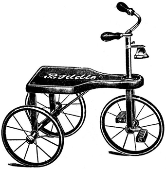

DU PETIT D'HOMME
A L'ADO LAISSANT
"Quand l’enfant naît, il naît avec toutes les nuances du monde. Il a ses exigences, ses ambitions. C’est l’enfant en moi qui me créé." Elie WIESEL
Jusqu’au milieu du XXe siècle, l’enfant était considéré comme un petit d’homme. Il fallait l’éduquer pour lui permettre de prendre la place qui lui était dévolue. Il fallait le modeler dans un moule sculpté à l’image de l’adulte attendu. Ce qui dominait alors, c’était l’hétéronomie : un corpus de pensées structurait l’individu et ordonnait le moindre de ses actes personnels ou collectifs. Tout était organisé pour que chacun se reconnaisse comme partie d’un ensemble. La personnalité traditionnelle incorporait ces normes avec un bonheur inégal, mais ce qu’on attendait de l’individu, c’est qu’il se soumette à l’autorité. Alors que jamais il n’a été confronté si jeune à l’autre, le premier avec qui chacun se trouve amené à composer, c’est soi-même !
Et les moeurs évoluent, la famille ne se vit plus comme le chaînon de base de la société, mais comme l’extension de l’individu. L’école ne se pose plus comme le lieu de la transmission des savoirs mais comme vecteur d’épanouissement personnel. L’éducation qui a été conçue pour permettre à l’enfant de passer de la nature à la culture, semble vouloir produire aujourd’hui des adultes heureux et équilibrés. Il ne s’agit pas d’exiger le renoncement au plaisir et l’acceptation de la frustration comme autant de vertus cardinales et prescrites, mais d’abandonner la satisfaction immédiate pour entrer dans la socialisation. Alors, entre ceux qui pensent que l’enfant sait de manière innée ce qui est bien pour lui et ceux qui fixent un cadre rigide, il convient de trouver la voie d’une autonomisation reconnaissant l’enfant comme à la fois petit d’homme et petit homme., ceci au travers ses dires et ses complaintes.
Puis l'enfant s'expand en passant par l'adolescence qui est un phénomène social supplémentant la puberté et qui correspond à une exigence interne au développement humain et dont sa forme et la manière de la gérer sont largement conditionnées par la culture et l’époque où elle se déploie. Dans les sociétés dites primitives, fortement structurées, des rituels de passage avaient une fonction initiatique : intégrer le jeune à la force supposée du monde adulte, baliser le processus, en disant à celui qui était pubère sous quel signifiant il devait s’inscrire, à quelle place il pouvait advenir dans le champ social. Aujourd’hui, dans nos pays, ce temps d’ébranlements physiques accompagnés de remaniements psychiques, cette période de flottement, de bouleversement s’étire sur une durée très longue. Le jeune n’en finit pas d’accéder à un statut d’adulte, du fait de l’allongement des études, de la crise du travail et de la liberté sexuelle, non plus conquise au-dehors, mais permise sous le toit familial, même très jeune.
Et les rituels de passage sont toujours présent, souvent numériques, virtuels, non palpables mais faisant office, même sous une forme 2.0. Chaque époque est porteuse d’une essence nouvelle et singulière. Les ados postmodernes sont confrontés de manière plus brutale et plus précoce à la dureté de la logique économique, à une priorité du vu et du montré , à la sexualité et parfois à sa violence, ceci au détriment de la mise en mots et en récits. À cela s’ajoutent possiblement un désagrègement des normes sociales, une délégitimation de l’autorité, le tiers autoritaire se délitant, se fragmentant et ne faisant plus guère fonction de tiers structurant et de limite, alors la transgression comme moyen, se généralise. Ces mutations, à la fois, de l’existence collective et de la subjectivité, cette « nouvelle économie psychique font du juvénile un humain sans boussole, sans lest, affranchi du refoulement et de la culpabilité, moins citoyen que consommateur, plongé dans la vacuité narcissique du sujet soumis à un impératif de jouissance immédiate, de satisfaction par l’objet, du plaisir au profit de l'épanouissement. De plus, nous assistons, du fait de la révolution numérique, à une véritable mutation. Une autre jeunesse est en train d’être façonnée, dont le virtuel risque de devenir la chair, tant elle est biberonnée aux technologies de pointe , hyperbranchée sur les réseaux sociaux, quasi hypnotisée par ces fascinants doudous modernes.
L’adolescence est rupture, elle dépossède le jeune prépubère de l’innocence du corps, elle est un temps d’adieux à l’enfance qui se vit dans la peur et la passion de grandir. Cette rencontre avec l’altérité, la génitalité en soi et en l’autre, à travers ce corps devenu différent, crée un effet d’étrangeté. La dimension nouvelle du sexuel et des fantasmes qui l’accompagnent est vécue comme effractante. La bipolarité de cette poussée pulsionnelle – pulsions libidinales sexuelles et pulsions agressives, destructrices – fait perdre à l’adolescent les repères structurants de l’enfance, la tranquillité de la période de latence et en vient à désidentifier le sujet.
Les assises narcissiques se constituent très tôt dans le cadre des interactions les plus précoces, et en particulier avec la mère. Quand les interactions sont dysfonctionnelles et n’apportent pas un ancrage affectif sécure et stable, les sujets ne vont pas pouvoir se constituer un socle narcissique solide. Les relations avec l’autre seront toujours empreintes d’une recherche de complétude et les vicissitudes des rapports humains seront vécues sur un mode d’abandon (relations dites anaclitiques).
Les bouleversements pubertaires de l’adolescence obligent les adolescents à reconstituer une image de leurs corps dans toutes ses dimensions (physique, libidinale et symbolique) lui permettant d’assumer ses propres pensées, désirs et actions. L’abandon du statut de l’enfance (et des sentiments de toute puissance et de complétude imaginaire qui la caraérisent), à un moment où se conflictualisent les liens de dépendance, représente une période charnière pour l’adolescent, et nécessite l’acquisition préalable d’un bon équilibre narcissique. C’est le deuxième temps de la phase de séparation-individuation. On comprend bien que les adolescents démunis narcissiquement, qui abordent cette période dans une dépendance extrême à leur entourage le plus proche, soient rapidement confrontés à une véritable impasse, écartelés qu’ils sont entre leurs légitimes revendications d’autonomie et leur besoin vital de ceux dont ils cherchent, pendant le même temps, à se séparer : c’est ce que Jeammet a décrit sous le terme d’antagonisme narcissico-objectal, pour désigner le fait que les besoins relationnels viennent menacer l’intégrité du sentiment d’exister et des limites propres.
Et les moeurs évoluent, la famille ne se vit plus comme le chaînon de base de la société, mais comme l’extension de l’individu. L’école ne se pose plus comme le lieu de la transmission des savoirs mais comme vecteur d’épanouissement personnel. L’éducation qui a été conçue pour permettre à l’enfant de passer de la nature à la culture, semble vouloir produire aujourd’hui des adultes heureux et équilibrés. Il ne s’agit pas d’exiger le renoncement au plaisir et l’acceptation de la frustration comme autant de vertus cardinales et prescrites, mais d’abandonner la satisfaction immédiate pour entrer dans la socialisation. Alors, entre ceux qui pensent que l’enfant sait de manière innée ce qui est bien pour lui et ceux qui fixent un cadre rigide, il convient de trouver la voie d’une autonomisation reconnaissant l’enfant comme à la fois petit d’homme et petit homme., ceci au travers ses dires et ses complaintes.
Puis l'enfant s'expand en passant par l'adolescence qui est un phénomène social supplémentant la puberté et qui correspond à une exigence interne au développement humain et dont sa forme et la manière de la gérer sont largement conditionnées par la culture et l’époque où elle se déploie. Dans les sociétés dites primitives, fortement structurées, des rituels de passage avaient une fonction initiatique : intégrer le jeune à la force supposée du monde adulte, baliser le processus, en disant à celui qui était pubère sous quel signifiant il devait s’inscrire, à quelle place il pouvait advenir dans le champ social. Aujourd’hui, dans nos pays, ce temps d’ébranlements physiques accompagnés de remaniements psychiques, cette période de flottement, de bouleversement s’étire sur une durée très longue. Le jeune n’en finit pas d’accéder à un statut d’adulte, du fait de l’allongement des études, de la crise du travail et de la liberté sexuelle, non plus conquise au-dehors, mais permise sous le toit familial, même très jeune.
Et les rituels de passage sont toujours présent, souvent numériques, virtuels, non palpables mais faisant office, même sous une forme 2.0. Chaque époque est porteuse d’une essence nouvelle et singulière. Les ados postmodernes sont confrontés de manière plus brutale et plus précoce à la dureté de la logique économique, à une priorité du vu et du montré , à la sexualité et parfois à sa violence, ceci au détriment de la mise en mots et en récits. À cela s’ajoutent possiblement un désagrègement des normes sociales, une délégitimation de l’autorité, le tiers autoritaire se délitant, se fragmentant et ne faisant plus guère fonction de tiers structurant et de limite, alors la transgression comme moyen, se généralise. Ces mutations, à la fois, de l’existence collective et de la subjectivité, cette « nouvelle économie psychique font du juvénile un humain sans boussole, sans lest, affranchi du refoulement et de la culpabilité, moins citoyen que consommateur, plongé dans la vacuité narcissique du sujet soumis à un impératif de jouissance immédiate, de satisfaction par l’objet, du plaisir au profit de l'épanouissement. De plus, nous assistons, du fait de la révolution numérique, à une véritable mutation. Une autre jeunesse est en train d’être façonnée, dont le virtuel risque de devenir la chair, tant elle est biberonnée aux technologies de pointe , hyperbranchée sur les réseaux sociaux, quasi hypnotisée par ces fascinants doudous modernes.
L’adolescence est rupture, elle dépossède le jeune prépubère de l’innocence du corps, elle est un temps d’adieux à l’enfance qui se vit dans la peur et la passion de grandir. Cette rencontre avec l’altérité, la génitalité en soi et en l’autre, à travers ce corps devenu différent, crée un effet d’étrangeté. La dimension nouvelle du sexuel et des fantasmes qui l’accompagnent est vécue comme effractante. La bipolarité de cette poussée pulsionnelle – pulsions libidinales sexuelles et pulsions agressives, destructrices – fait perdre à l’adolescent les repères structurants de l’enfance, la tranquillité de la période de latence et en vient à désidentifier le sujet.
Les assises narcissiques se constituent très tôt dans le cadre des interactions les plus précoces, et en particulier avec la mère. Quand les interactions sont dysfonctionnelles et n’apportent pas un ancrage affectif sécure et stable, les sujets ne vont pas pouvoir se constituer un socle narcissique solide. Les relations avec l’autre seront toujours empreintes d’une recherche de complétude et les vicissitudes des rapports humains seront vécues sur un mode d’abandon (relations dites anaclitiques).
Les bouleversements pubertaires de l’adolescence obligent les adolescents à reconstituer une image de leurs corps dans toutes ses dimensions (physique, libidinale et symbolique) lui permettant d’assumer ses propres pensées, désirs et actions. L’abandon du statut de l’enfance (et des sentiments de toute puissance et de complétude imaginaire qui la caraérisent), à un moment où se conflictualisent les liens de dépendance, représente une période charnière pour l’adolescent, et nécessite l’acquisition préalable d’un bon équilibre narcissique. C’est le deuxième temps de la phase de séparation-individuation. On comprend bien que les adolescents démunis narcissiquement, qui abordent cette période dans une dépendance extrême à leur entourage le plus proche, soient rapidement confrontés à une véritable impasse, écartelés qu’ils sont entre leurs légitimes revendications d’autonomie et leur besoin vital de ceux dont ils cherchent, pendant le même temps, à se séparer : c’est ce que Jeammet a décrit sous le terme d’antagonisme narcissico-objectal, pour désigner le fait que les besoins relationnels viennent menacer l’intégrité du sentiment d’exister et des limites propres.

La majorité des conduites addictives semble, au vu des études épidémiologiques, s’ébaucher dans une période sensible située entre 14 et 18 ans, y compris pour celles qui n’acquièrent leur dimension pathologique que beaucoup plus tard. Le processus d’adolescence vient ainsi révéler, par l’émergence de la pathologie addictive, l’existence de fragilités narcissiques préexistantesLa rencontre avec l’objet de l’addiction paraît être pour le sujet une solution de dégagement d’un processus impossible pour lui. Le recours au comportement et aux limites du corps devient pour les adolescents une façon de se soustraire à un vécu d’emprise mentale dans leurs relations à ceux qui les entourent, une façon aussi de contrer l’angoisse insupportable de l’impermanence du lien (la drogue est ainsi un objet toujours satisfaisant et sécurisant). C’est dans cette mesure que la solution addictive peut être resituée comme une tentative paradoxale de survie psychique, un compromis acrobatique entre revendication d’autonomie et nécessité de l’esclavage de la dépendance, au prix d’un déni du vécu de celle-ci. On peut parler d’auto-traitement de substitution d’une dépendance inélaborable à l’entourage proche.
La puberté est aussi ce moment incontournable où le réel de la chair vient faire irruption dans l’image du corps. L’adolescent se sent gauche, maladroit, s’interroge sur l’identité de son moi et ressent comme une disgrâce l’irruption de ce nouveau corps avec ses odeurs, ses fluides, ses sensations inattendues et le dévoilement de ces émotions par l’irruption irrépressible de la rougeur. Ce corps changeant, pulsionnel qui le déborde, secrète le plus souvent des affects qui sont ceux de la pudeur, de la gêne, de la honte voire du dégoût, que les adolescents tentent de gérer par la provocation ou par la fuite, en se planquant derrière une image passe-muraille dont eux seuls ont le code.
Ainsi commence le temps du paradoxe. L’adolescence brisant l’unité bienheureuse de l’enfance, le jeune ne sait plus trop qui il est, où il va, ne se définit plus comme l’enfant par sa place dans le système familial et social, et cherche "un lieu où le chaos l’accepterait" comme disait Bob Dylan. Il va tenter de se construire une nouvelle identité de façon plus ou moins aléatoire, avec des régressions et des transgressions. Son inquiétude se décline en interrogations à la fois narcissiques et objectales : Qui suis-je ? – Qui suis-je pour autrui ? - Comment les autres me voient-ils ? Le juvénile figé attend, espère, redoute la nomination qui va lui faire retour dans le regard, la parole d’autrui sous lesquels il se sent à la fois exister et disparaître, et auxquels il peut répondre de manière violente quand il se sent flingué, néantisé, exclu. Nous avons tous à l’esprit l’image bien connue du homard pendant la mue de Françoise. Dolto. Elle donne à voir la fragilité psychique de cet écorché vif qui se défait de sa carapace et doit redessiner ses frontières et l’image qu’il a de lui-même.
L’adolescent est alors très en recherche et craint de ne pas trouver ce qu’il cherche, d’autant qu’il ne le sait pas toujours lui-même, génèrant une ambiance intérieure très anxiogène. La période de vie faisant, la fonction de protection et de contenance parentale est souventt remise en question, le jeune perd en partie les appuis narcissiques antérieurs et va devoir non seulement investir ce nouveau corps sexué mais découvrir ses ressources personnelles, montrer ce qu’il a dans le bide. Il se positionne alors régulièrement entre passivité et proactivité, une stratégie cognitivo comportementale se voulant psychiquement économique.
C'est le moment des pertes, des dueils : le Moi du jeune secoué par l’épreuve, a l’impression de perdre, en même temps que l’amour des parents, l’amour de lui-même et subit une déflation, compensée par une inflation narcissique qui le rend arrogant et l’amène à se croire supérieur, tout-puissant. Inexpérimenté et en apprentissage existanciel, il s’imagine défier les adultes tout en enviant en secret leur assurance. Ce mouvement de désidentification aux imagos infantiles lui permet de se séparer des images tutélaires de l’enfance, d’entrer en rivalité et le pousse loin du cocon.
Pour sauver son identité menacée, s’affirmer, le jeunot va s’opposer par ses choix de vie, ses idées, inventer des comportements et des accoutrements extravagants, s’identifier à des modèles et à des idoles qui peuvent être diamétralement opposés à ceux des figures parentales, mettre à l’épreuve les principes de valeurs, les normes, les interdits afin de faire reculer les limites et de dessiner ses frontières personnelles. Il a tout autant besoin de chercher à polémiquer, à exaspérer l’adulte, à le provoquer, qu’il a besoin de recevoir de lui ce qui lui manque et de trouver en face de lui un cadre, des barrières, un garde-fou, La construction de soi suppose de déplacer la puissance des imagos parentales infantiles vers des figures sociales adultes qui se tiennent en surplomb, indiquent un cap, et dont les adolescents, en quête de boussole, vont observer la cohérence, sonder les valeurs.
L’adolescence devient stucturellement le temps de la conflictualité psychique où l’on désire une chose et son contraire, où le besoin de s’affirmer se conjugue avec la peur de se confronter au monde extérieur, où le désir de liberté s’oppose au besoin de sécurité, où le besoin de recevoir, d’être entouré, protégé, contrarie la volonté de se suffire à soi-même.
Et n'oublions pas que nous avons tous, sans exception, été juvénile. Parfois adulte, nous retournons dans cette période, comme pour y chercher ou terminer quelque chose, mais ceci est un autre sujet !
La puberté est aussi ce moment incontournable où le réel de la chair vient faire irruption dans l’image du corps. L’adolescent se sent gauche, maladroit, s’interroge sur l’identité de son moi et ressent comme une disgrâce l’irruption de ce nouveau corps avec ses odeurs, ses fluides, ses sensations inattendues et le dévoilement de ces émotions par l’irruption irrépressible de la rougeur. Ce corps changeant, pulsionnel qui le déborde, secrète le plus souvent des affects qui sont ceux de la pudeur, de la gêne, de la honte voire du dégoût, que les adolescents tentent de gérer par la provocation ou par la fuite, en se planquant derrière une image passe-muraille dont eux seuls ont le code.
Ainsi commence le temps du paradoxe. L’adolescence brisant l’unité bienheureuse de l’enfance, le jeune ne sait plus trop qui il est, où il va, ne se définit plus comme l’enfant par sa place dans le système familial et social, et cherche "un lieu où le chaos l’accepterait" comme disait Bob Dylan. Il va tenter de se construire une nouvelle identité de façon plus ou moins aléatoire, avec des régressions et des transgressions. Son inquiétude se décline en interrogations à la fois narcissiques et objectales : Qui suis-je ? – Qui suis-je pour autrui ? - Comment les autres me voient-ils ? Le juvénile figé attend, espère, redoute la nomination qui va lui faire retour dans le regard, la parole d’autrui sous lesquels il se sent à la fois exister et disparaître, et auxquels il peut répondre de manière violente quand il se sent flingué, néantisé, exclu. Nous avons tous à l’esprit l’image bien connue du homard pendant la mue de Françoise. Dolto. Elle donne à voir la fragilité psychique de cet écorché vif qui se défait de sa carapace et doit redessiner ses frontières et l’image qu’il a de lui-même.
L’adolescent est alors très en recherche et craint de ne pas trouver ce qu’il cherche, d’autant qu’il ne le sait pas toujours lui-même, génèrant une ambiance intérieure très anxiogène. La période de vie faisant, la fonction de protection et de contenance parentale est souventt remise en question, le jeune perd en partie les appuis narcissiques antérieurs et va devoir non seulement investir ce nouveau corps sexué mais découvrir ses ressources personnelles, montrer ce qu’il a dans le bide. Il se positionne alors régulièrement entre passivité et proactivité, une stratégie cognitivo comportementale se voulant psychiquement économique.
C'est le moment des pertes, des dueils : le Moi du jeune secoué par l’épreuve, a l’impression de perdre, en même temps que l’amour des parents, l’amour de lui-même et subit une déflation, compensée par une inflation narcissique qui le rend arrogant et l’amène à se croire supérieur, tout-puissant. Inexpérimenté et en apprentissage existanciel, il s’imagine défier les adultes tout en enviant en secret leur assurance. Ce mouvement de désidentification aux imagos infantiles lui permet de se séparer des images tutélaires de l’enfance, d’entrer en rivalité et le pousse loin du cocon.
Pour sauver son identité menacée, s’affirmer, le jeunot va s’opposer par ses choix de vie, ses idées, inventer des comportements et des accoutrements extravagants, s’identifier à des modèles et à des idoles qui peuvent être diamétralement opposés à ceux des figures parentales, mettre à l’épreuve les principes de valeurs, les normes, les interdits afin de faire reculer les limites et de dessiner ses frontières personnelles. Il a tout autant besoin de chercher à polémiquer, à exaspérer l’adulte, à le provoquer, qu’il a besoin de recevoir de lui ce qui lui manque et de trouver en face de lui un cadre, des barrières, un garde-fou, La construction de soi suppose de déplacer la puissance des imagos parentales infantiles vers des figures sociales adultes qui se tiennent en surplomb, indiquent un cap, et dont les adolescents, en quête de boussole, vont observer la cohérence, sonder les valeurs.
L’adolescence devient stucturellement le temps de la conflictualité psychique où l’on désire une chose et son contraire, où le besoin de s’affirmer se conjugue avec la peur de se confronter au monde extérieur, où le désir de liberté s’oppose au besoin de sécurité, où le besoin de recevoir, d’être entouré, protégé, contrarie la volonté de se suffire à soi-même.
Et n'oublions pas que nous avons tous, sans exception, été juvénile. Parfois adulte, nous retournons dans cette période, comme pour y chercher ou terminer quelque chose, mais ceci est un autre sujet !
EN RELATION


AFFIRMATION
EMOTION
COMPORTEMENT
AUTHENTICITE
BESOINS
RELATIONNELS
FRUSTRATION
CONFIANCE
ESTIME